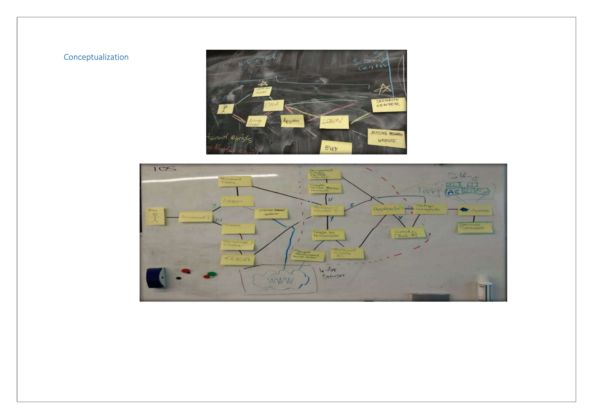
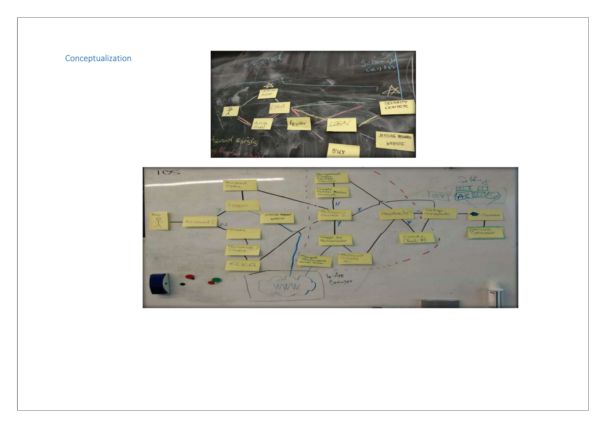

Browser Extension Redesign
Reimagined the browser extension for seamless security integration with enhanced usability and trust signals.
Project Overview
The browser extension was a key product for securing users against online threats. However, its outdated interface and confusing workflows led to poor adoption and low engagement.
The redesign aimed to modernize the extension, improve user trust with clear security indicators, and streamline everyday tasks for both casual and power users.
My Role & Responsibilities
- Product Leadership: Owned the product roadmap for the extension redesign.
- User Insights: Conducted research on user trust and perceptions of browser security tools.
- UI/UX Collaboration: Partnered with design teams to build intuitive security dashboards and alerts.
- Delivery Oversight: Coordinated development sprints and managed QA for extension rollouts.
- Impact Measurement: Tracked adoption metrics, engagement, and user feedback post-launch.
Key Challenges
- Establishing trust in a lightweight, easily dismissible interface.
- Balancing advanced features with simplicity for casual users.
- Designing for multiple browsers with consistent experience.
Solutions & Impact
Introduced a clean interface with trust signals (lock icons, color-coded alerts), quick access to security actions, and progressive complexity for power users. Supported Chrome, Firefox, and Edge with consistent UX.
The redesign improved active usage by 55%, reduced abandonment by 40%, and increased positive sentiment scores to 88%.
Visuals & Prototypes


 


Learnings & Future Directions
This project highlighted the importance of trust signals in cybersecurity design. Future improvements could include AI-driven phishing detection and real-time content analysis.